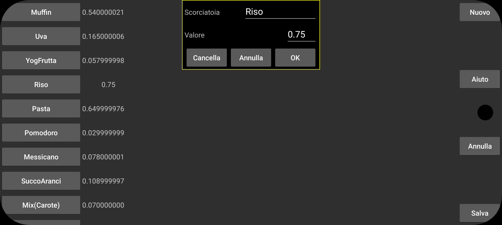

Scorciatoie possono essere usate in Kerfstok.
Nella schermata di inserimento numeri sull'orologio puoi raggiungere la schermata delle scorciatoie (sul mio orologio Vivoactive 3 facendo swipe verso sinistra). Qui vedi una lista di etichette; premendone una si inserisce un valore corrispondente nella schermata dei numeri. I valori possono essere numeri o operatori aritmetici in combinazione con i numeri ad esempio *0.5 per moltiplicare per 0,5.
Qui nel menu impostazioni puoi creare, rimuovere e modificare queste scorciatoie.
Una lista di scorciatoie esistenti viene mostrata sulla sinistra, dopo averne toccata una appare un display in cui puoi cancellare la scorciatoia, o cambiare l'etichetta o il valore.
Una nuova scorciatoia viene creata con Nuovo.
Le modifiche vengono salvate solo dopo aver premuto il pulsante Salva.